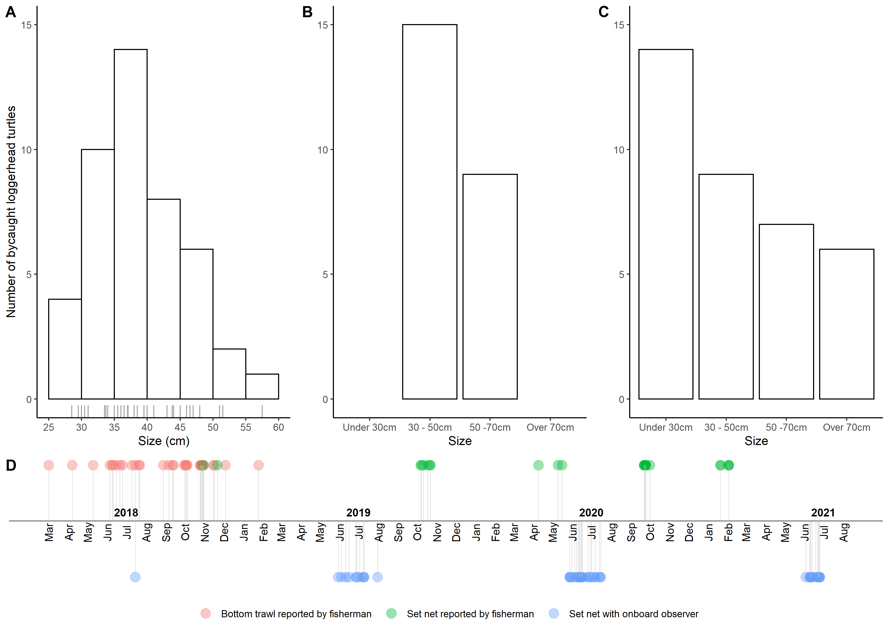
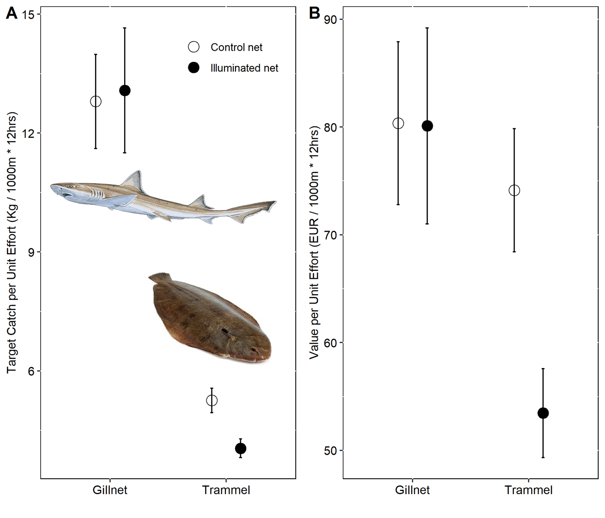
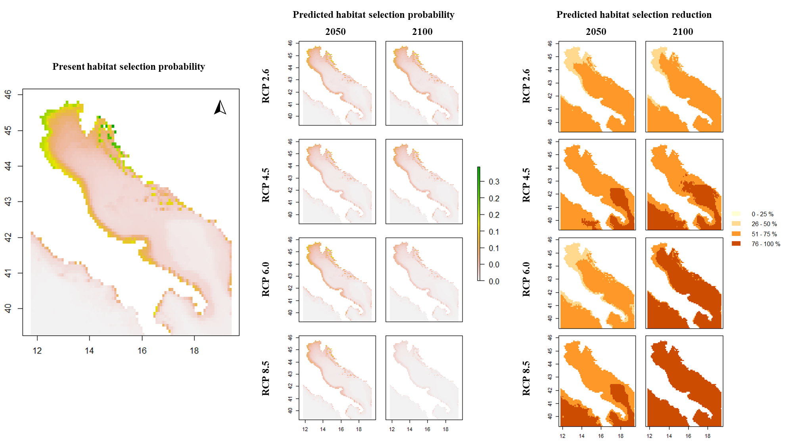
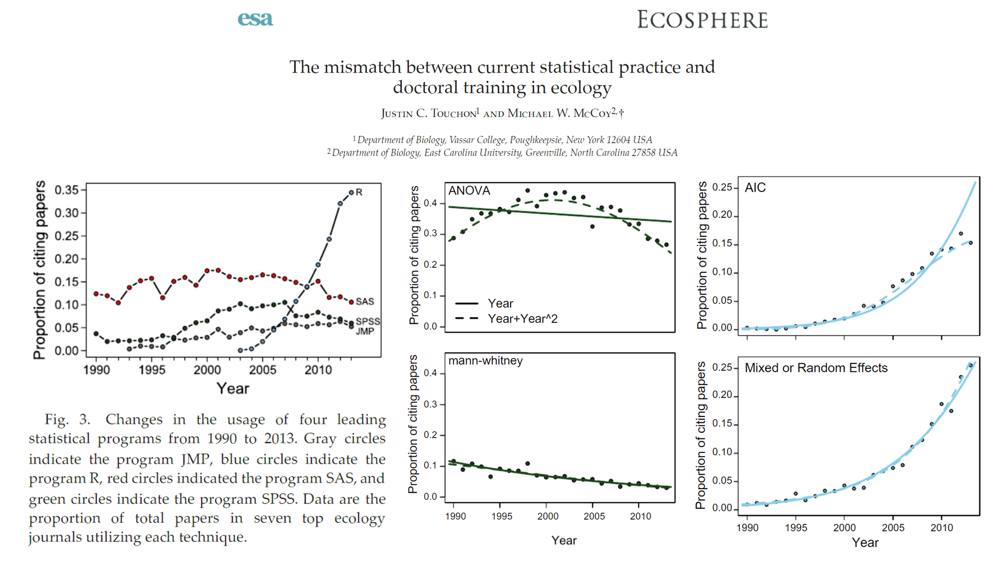

timelineplot <- ggplot(temporal_distribution, aes(x = Date, y = N, color = Gear)) +
geom_point(size = 4, alpha = 0.4) +
theme_classic() +
theme(axis.line.y=element_blank(), axis.text.y=element_blank(),
axis.title.x=element_blank(), axis.title.y=element_blank(),
axis.ticks.y=element_blank(), axis.text.x =element_blank(),
axis.ticks.x =element_blank(), axis.line.x =element_blank(),
legend.position="bottom", legend.title = element_blank()) +
geom_hline(yintercept=0.05, color = "black", size=0.3) +
geom_segment(aes(y = N, yend = 0.05, xend = Date),
color = "grey", size = 0.02) +
geom_text(data = month_df, aes(x=month_date_range,y = 0.04, label = month_format),
size = 3.5, vjust = 0.5, color = 'black', angle = 90) +
geom_text(data = year_df, aes(x = year_date_range, y = 0.058,
label = year_format, fontface="bold"),
size = 3.5, color='black')
Summary
In this lab, you will be introduced to:
- R and RStudio,
- using R scripts to type and run basic R code,
- using basic operations (addition, subtraction, multiplication) and logical operators in R,
- fundamental data types in R: vectors, dataframes and lists.
Who am I and why am I teaching you this course?

More info here or here or here.
I have 7+ years of experience working with R and use it on regular basis for research and teaching (Intro to R, Intro to GIS in R, Intro to data exploration and statistics in R, Species distribution modelling in R, etc.). A couple of examples below.
This code:
gives you this:

This code:
PPUE_plot <-
ggplot(data = PPUEsummary,aes(x = Gear_Type, y = PPUE)) +
geom_point(aes(shape = Net_Type), size = 4,
position = position_dodge(width = 0.5)) +
scale_shape_manual(values = c(1, 19),
labels = c("Control net", "Illuminated net") )+
geom_errorbar(aes(group = Net_Type, ymin = PPUE - se, ymax = PPUE + se),
width = 0.05,
position = position_dodge(width = 0.5)) +
ylim(0, 110) +
ylab("Price per Unit Effort (EUR / 1000m * 12hrs)") +
xlab("") +
theme(panel.background = element_rect(fill = "white", colour = "black"),
strip.background = element_rect(fill = "white", colour = "black"),
legend.position = "none",
axis.title=element_text(size=10),
axis.text=element_text(size=10, color = "black"))gives you this:

This code (note the … on several occasions):
# ...
mixed_model_level1 <- glmer(presence ~ scale(BO_bathymean) + scale(BO21_tempmean_ss)+ scale(BO21_temprange_ss) + scale(BO21_tempmean_bdmean) + (1|Animal_ID),
family = binomial(link="logit"),
data = wild.track_RSF)
present_level1 <- predict(present_env_layers,
mixed_model_level1,
type = "response",
re.form=~0)
predictions_RCP26_2050_level1 <- predict(future_RCP26_2050,
mixed_model_level1,
type = "response",
re.form=~0)
# ...
plot(present_level1, main = "Present suitability L1", zlim=c(0,1))
plot(predictions_RCP26_2050_level1, main = "Predicted suitability RCP26 2050 L1", zlim=c(0,1))
# ...gives you this:

This document has also been produced with R and transformed to hmtl format. This enables you to open it with Google chrome and translate it to Croatian langauge for easier understanding (right clicking anywhere on the document and choosing Translate to Croatian).
Note
I encourage you to raise your ✋ anytime you have a question and bring it up. We can all learn from it.
What is R and why should you use it?
Let me first convince you, why. The paper can be accessed here.

By the end of this course, you will be able to access multiple online global biological and ecological datasets, download the data and prepare it for analysis, and visualise as follows (using only a handful of R code lines):

R:
- is a programming language, developed by Ross Ihaka nad Robert Gentleman in 1995.
- is open source, everything is free of charge.
- provides a wide variety of packages with statistical tools and graphical visualizations, primarily developed for scientific research.
- enables reproducibility. Code is written and saved. In a year it will (most likely) still work. Also our peers/reviewers can check which analysis and how it was performed to reproduce our results (basis of science!)
- is highly extensible. Development of new tools/functions is relatively simple, new functionalities are being developed and uploaded daily to CRAN(statistics, biology, ecology, modelling and similar) & bioconductor(genetic, pharmaceuticals and all omics fields)!
- has a very lively community, its easy to find answers for all problems (just google it - how to …, error xyz in r) or on dedicated web communities (stackoverflow, stackexchange).
According to many, R is one of the easiest programming languages to learn and use in the long run, but might be very challenging at the beginning. You are among the lucky ones, that were granted a great teacher to gently introduce you to it. üòâ
Base R is a console in which text or numbers (or both) are typed. It expects meaningful inputs that it can execute. Otherwise it will return an error. We will not be using base R directly, but as a part of RStudio.

RStudio is a sophisticated working environment that usually has four open panes:
- One pane is R console, which represents an integration of R language within the program. Here all commands will be executed.
- One pane is an R script, which is simple text editor, where we will write our commands and save them for further use (The script might not be open at the start of RStudio).
- One pane combines multiple tabs (
Files,Plots,Packages,Help&Viewer) which we will look at later when working on examples.
- One pane combines multiple tabs (
Environment,History&Connections). At this point,Environmentis the only one important to us: it is the “place” where the data we will work with has to be available. You can see in the image below, that the environment is empty (and it should be empty in your computers as well, if you haven’t done anything after the installation).
Task
Open R studio. The interface should look like in the image below (the order of the panes might be different, which is OK).

Task
Open an empty R script from the File dropdown menu by clicking New file \ R script. The script will have a name Untitled1 (or Untitled2, if a blank script was already open).
Save the script to the Desktop of your computer and name it Introduction to R.
Basics of working with R
The most basic thing R can be used for is a calculator with basic arithmetic operations.
| Operator | Description |
|---|---|
| + | Addition |
| - | Subtraction |
| * | Multiplication |
| / | Division |
| ^ | To the power (Alt GR & 3 on keyboard) |
Lets use them in practice.
Task
Copy and paste below calculations in the R script, move cursor to the first row with code and click Run. Move cursor to each row that contains code and repeat.
Type into the script and run a minimum of 10 own examples.
3 + 5
8 - 9
7 * 7
42 / 6
5 ^ 5
9 ^ (1/2) # square root
Note
Note that the last row in the example above was executed in the console until the hashtag (#). This denotes a comment in the R script and the console knows, that it is not a part of the code and should be ignored.
Comments are very useful as we have a tendency to forget. They kindly remind us, what we did with different parts of the code, when we return to it a year later.
The next thing that you need to know are logical operators. At this point, we will just try them out, in the next labs you will see their importance in filtering and selecting specific parts of your data:
| Operator | Description |
|---|---|
| < | Less than |
| <= | Less than or equal to |
| > | Greater than |
| >= | Greater than or equal to |
| == | Exactly equal to |
| != | Not equal to |
| x | y | Or (Alt GR & w) |
| x & y | And |
Lets use them in practice.
Task
Copy and paste below calculations in the R script, move cursor to the first row with code and click Run. Move cursor to each row that contains code and repeat.
Type into the script and run a minimum of 10 own examples.
3 < 5
8 <= 9
7 > 7
42 >= 6
5 == 5
10 != 1A cruical part of working with R is storing data as objects in R’s working environment, so we can access them when needed and not typing them multiple times. For this, assign operator <- is used. The value on the right side of it will be assigned to a name on the left. The name is choosen by us and it can be (almost) anything. When we use the assign operator the result of the code will not be displayed in the console, but a name should appear in R working environment.
Task
Copy and paste below code in the R script, move cursor to the first row with code and click Run. Move cursor to each row that contains code and repeat.
What happened when executing each row?
# look into the working environment for this name
square_root_of_9 <- 9 ^ (1/2)
# if you click run next to a name, its content will be printed
square_root_of_9 [1] 3# this will not work as the first letter is CAPITAL
Square_root_of_9 Error in eval(expr, envir, enclos): object 'Square_root_of_9' not found# this will not work as the 9 is not equal to nine
Square_root_of_nine Error in eval(expr, envir, enclos): object 'Square_root_of_nine' not foundIf we want to see the content of an object, we type its name into R script and click Run.
Warning
R requires that we are completely precise in our instructions. Typos matter. Case matter!! 99% of errors at the beginning are result of inconsistencies in typing!!
If the error says: object ‘…’ not found it is usually because its name was not typed correctly.
Tip
Tip to avoid this problems:
Use auto-completion of the code enabled by RSudio: after typing three characters, RStudio will offer options that start with them. Instead of typing the whole command, you can select an option from the suggested list.
Task
Type ten random names into the script and assign each a number or a result of a calculation (as example above). Start clicking Run in the first typed row and move down with the cursor to each row. The result should be ten new names in your R’s working environment
Using auto-completion, type this 10 names into the script again. Start clicking Run in the first row and move down with the cursor to each row containing a name. The result should be ten printed names in the console with their corresponding values below.
Questions to consider:
- What are some of the most basic functionalities R can be used for?
- What is an R object and where does it get a name from?
- How can we inspect / see what an R object contains?
Do you have any questions?
Data types: vectors, dataframes and lists
There are many data types defined within R. Among the basic types, vectors, data frames and lists are the most important. By assigning values to objects above, you have already created a vector. This vectors contain only one element - the number that you have assigned to a specific name.
Vectors by definition contain only elements of the same data type, which can be:
- Numeric (numbers),
- Logical (TRUE, FALSE),
- Character strings (letters or words, of which each must be included within
" "for R to know its a word not a name of an object), - Integers (whole numbers, important for programmers, not so much for us),
- Missing data or Not Available data (coded as
NAand the only type that can be included in vectors of other types).
We create vectors by using function c() and typing the values of the vector within the parenthesis separated by commas (,).
Task
Copy and paste below code in the R script, move cursor to the first row with code and click Run. Move cursor to each row that contains code and repeat.
numerical_vector <- c(1, 2, NA, 4, 5)
logical_vector <- c(TRUE, TRUE, FALSE, FALSE, TRUE)
character_vector <- c("R", "is", "a", "wonderful", "tool")
mixed_vector <- c("R", NA, 1, TRUE, 7.9631423)
Note
If a vector contains elements that belong to different types, it will coerce the entire vector to the lowest common type. An example is the mixed_vector, for which you will see shortly that all elements were converted to characters.
There are two properties of vectors that are of interest. The first is the number of elements that a vector contains and can be checked by using length() function and the name of the vector within its parenthesis. The second is the type of the vector that can be checked by using class() and the name of the vector within its parenthesis.
square_root_of_9 ; length(square_root_of_9) ; class(square_root_of_9) # number
# three numbers and one not available
numerical_vector ; length(numerical_vector) ; class(numerical_vector)
# four logical values
logical_vector ; length(logical_vector) ; class(logical_vector)
# five words -> note that also displayed in console, the elements are in " "
character_vector ; length(character_vector) ; class(character_vector)
# 4 elements, three coerced to characters by R automatically putting " " around all
# values of the vector
mixed_vector ; length(mixed_vector) ; class(mixed_vector)A data frame in its essence are multiple vectors combined in a table. Each vector we add to the table becomes one column of this table. Data frames are the most common and most used data type. Usually, data frames are imported from our computer hard-drive, but we will also take a look at how to manually create one.
Like vectors, data frames have their own properties as well. We can check how many rows (nrow()) or columns a data frame has (ncol()), or simply check the dimensions of a data frame (dim()). We can also extract or change the names of the columns of our data frame with names() function. summary … print by typing and running its name ..
Task
Copy and paste below code in the R script, move cursor to the first row with code and click Run. Move cursor to each row that contains code and repeat.
example_data_frame <- data.frame(numerical_vector,
logical_vector,
character_vector,
mixed_vector)
nrow(example_data_frame)
ncol(example_data_frame)
dim(example_data_frame)
names(example_data_frame)
summary(example_data_frame)example_data_frame numerical_vector logical_vector character_vector mixed_vector
1 1 TRUE R R
2 2 TRUE is <NA>
3 NA FALSE a 1
4 4 FALSE wonderful TRUE
5 5 TRUE tool 7.9631423
Task
On the whiteboard I will write a couple of our names, year of birth and hair colour. As some might feel uncomfortable with sharing this information, we will replace that with NAs instead.
Type these values into script and assign them to vectors. Bind these vector to a dataframe called best_class_ever. Check the properties of our table with functions presented above. Compare if you inserted the values correctly based on the values on the whiteboard.
Lists are objects which can contain elements of different types like numbers, character strings (= words), vectors, dataframes and even other lists. List is created by using list() function and typing object names within the parenthesis. Lists are complex data structures, that are suitable for advanced use as they offer high degree of flexibility. Below code gives an example list, that contains all types of objects listed above.
Task
Copy and paste below code in the R script, move cursor to the first row with code and click Run. Move cursor to each row that contains code and repeat.
example_list <- list(1,
"Pula, Croatia",
mixed_vector,
example_data_frame,
list(1,
"Pula, Croatia",
mixed_vector,
example_data_frame))
example_list[[1]]
[1] 1
[[2]]
[1] "Pula, Croatia"
[[3]]
[1] "R" NA "1" "TRUE" "7.9631423"
[[4]]
numerical_vector logical_vector character_vector mixed_vector
1 1 TRUE R R
2 2 TRUE is <NA>
3 NA FALSE a 1
4 4 FALSE wonderful TRUE
5 5 TRUE tool 7.9631423
[[5]]
[[5]][[1]]
[1] 1
[[5]][[2]]
[1] "Pula, Croatia"
[[5]][[3]]
[1] "R" NA "1" "TRUE" "7.9631423"
[[5]][[4]]
numerical_vector logical_vector character_vector mixed_vector
1 1 TRUE R R
2 2 TRUE is <NA>
3 NA FALSE a 1
4 4 FALSE wonderful TRUE
5 5 TRUE tool 7.9631423
Task
Save the R script to the desktop of your computer.
When you close R studio, select Yes when it asks if you want to save your work-space.
Questions to consider:
- What defines an R vector and which basic vector types there are?
- How are R vectors and R dataframes connected?
- What are some functions that allow us to explore the properties of vectors and dataframes in terms of number of elements, rows columns etc.?
- What are R lists?
Do you have any questions?
Take home message
R is a language and learning it is similar to learning a foreign language. It takes time and patience. The good thing is that there are only two really important thing to grasp at the beginning: what is an object and a function, and how these two interact: a function (usualy predefined by R developers) is applied to an object (which has a given name, usualy by us) and we expect something to happen as a result. Note that you used several function on several objects today (i.e. functions c(), data.frame(), names() etc., on objects character_vector, heigth, best_class_ever etc.). This is the essence of working with R and most of the time you will be doing just that, function(object) and get what you wanted or get:
function(object)Error: <text>:2:0: unexpected end of input
1: function(object)
^
Partly funded by EU Erasmus+ Programme for Higher Education Staff Mobility